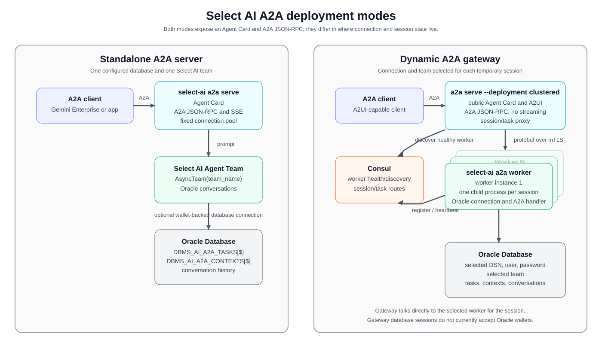

1. Agent2Agent (A2A)¶
Select AI for Python can expose an Oracle Database AI Agent Team through the Agent2Agent (A2A) protocol. A2A clients can discover the team from an Agent Card, submit database prompts, and retrieve task results through the same JSON-RPC endpoint.
Make two independent choices: where the server runs (topology) and when database connection values are supplied (fixed or dynamic). For example, a clustered deployment can use fixed credentials, and a standalone deployment can ask each client for credentials.

A Select AI agent team accessed through an A2A client.¶
1.1. Choose a topology¶
Standalone: run one public
select-ai a2a serveprocess. It handles A2A requests and database work locally. Start here for a single server; Consul and a separate worker are not required.Clustered: run a public gateway with
select-ai a2a serve --deployment clusteredand one or moreselect-ai a2a workerprocesses. Consul lets the gateway discover healthy workers and route each session back to its worker. Use this when database sessions need to run across multiple workers. See Why clustered deployments use Consul for the role of this additional service.
1.2. Why clustered deployments use Consul¶
Consul is a separate service that keeps a directory of running workers and records which worker owns each A2A session. The gateway consults this directory to answer two questions: “Where can I start a new session?” and “Where should I send the next request for an existing session?”
This matters because each database session runs in a child process on one worker. That process holds the session’s database connection and credentials. Later prompts, task-status requests, and cancellation requests must reach that same worker. A different worker cannot continue using its live connection.
Consul provides three things for the gateway:
Worker discovery: each worker registers its address when it starts. The gateway can find workers without a manually maintained list of addresses.
Worker health: workers send regular heartbeats to Consul to report that they are running. The gateway selects a worker whose health check is passing when opening a new session.
Session and task routing: the gateway records the worker assigned to a session and the session associated with each task. Subsequent requests can reach the worker that owns them, even when other workers are available.
For example, suppose two workers, A and B, are running. The gateway opens your session on worker A and records that assignment in Consul. Your next prompt and a request to check your task’s status both go to A. Another client’s new session can run on B. If A stops, the gateway cannot move its live database connection to B; the client must reconnect to open a new session. See Session isolation, routing, and cleanup for expiry and reconnection behavior.
Consul stores worker addresses and temporary routing records. Database passwords are not stored in Consul; task results and conversation history are stored in Oracle Database. See Persistent Oracle-backed state for the database storage details.
When do you need it? The current clustered implementation requires Consul, even with only one worker or fixed database credentials. Standalone deployment handles sessions locally and does not require Consul. For a first deployment, use standalone unless you need separate worker processes across machines.
1.3. Choose how connections are configured¶
Each session needs four values: a database DSN, username, password, and an
existing AI Agent Team name. Configure these on a2a serve with --dsn,
--user, --password, and --team, or their environment fallbacks.
Fixed: configure all four values before starting the server. Clients send prompts without completing a connection form. In standalone topology, the server uses a shared connection pool. In clustered topology, the gateway automatically opens a session on a worker using the configured values.
Dynamic: leave one or more values unset. The client’s first message receives an A2UI connection form asking for those missing values. After the client submits the form, the server opens an isolated database session and the client can send prompts using that A2A context ID. The client must support the A2UI handshake; see the runnable samples below.
For example, configure --dsn and --team for an application that always
uses one database and one team, but lets each user connect with their own
username and password. The form then asks only for username and password.
Leave all four values unset to let the client choose the database and team
as well. Values configured on the server cannot be changed by the client.
“Dynamic” describes collecting connection values when a session starts. Changing a database or user requires a new session. It does not switch the connection underneath an existing session.
Topology |
Fixed connection |
Dynamic connection |
|---|---|---|
Standalone |
Shared async pool; streaming supported. |
Local child process per session; task polling supported. |
Clustered |
Worker session opened automatically; task polling supported. |
Worker session opened after form submission; task polling supported. |
Dynamic standalone and all clustered sessions do not support streaming. Standalone dynamic mode requires one Uvicorn process. Clustered mode requires Consul and at least one worker even when the connection is fixed. See A2A CLI examples for commands and Command Line Interface for options.


Select AI A2A topologies. Dynamic sessions can run inside the standalone server or through the clustered gateway and worker processes.¶
1.4. CLI-based deployment on any cloud¶
The A2A runtimes are provided as ordinary Select AI CLI commands, so they are not tied to a particular cloud provider. Run the commands on a local machine, a virtual machine, a container platform, or a Kubernetes service in any cloud that can reach the required Oracle Database. Clustered deployments also need Consul; standalone deployments do not.
The --deployment option defaults to standalone. Set it to
clustered to use a gateway and workers. There is no separate connection-mode
CLI flag: the connection is fixed when all four connection values are supplied
and dynamic when any are missing. Environment values count as supplied values.
See A2A CLI examples for complete commands.
The commands can be packaged into the platform’s preferred container or process deployment. The Google Cloud scripts documented below are convenience automation for a Cloud Run/GKE deployment; they are not required to use the A2A CLI commands on another cloud or on self-managed infrastructure.
The public routes are the same in all supported combinations:
/.well-known/agent-card.jsonAgent Card discovery endpoint.
/a2a/jsonrpc/A2A JSON-RPC endpoint. The endpoint accepts the A2A 1.0 method names and the A2A v0.3 compatibility method names.
1.5. Installation and prerequisites¶
Install the A2A dependencies before running the server, gateway, or worker:
python -m pip install 'select_ai[a2a]'
All modes require:
an Oracle Database where the Select AI Agent Team is installed;
a database user with the privileges required by Select AI and the team; and
network access from the process to Oracle Database.
The database user also needs CREATE TABLE, CREATE VIEW, and sufficient
quota in its default tablespace for A2A task and context storage. Ask a database
administrator to grant these privileges to each database user that will open
an A2A session. The SDK’s grant_privileges() helper grants package execute
privileges; it does not grant these storage privileges or tablespace quota.
At initialization, the runtime creates missing internal tables and executes
CREATE OR REPLACE VIEW for its read-only views. CREATE VIEW is therefore
required even when the tables already exist. See
Persistent Oracle-backed state.
The fixed standalone server needs all database values at startup. Dynamic standalone and clustered sessions can collect missing values through A2UI. Clustered deployment additionally requires Consul and at least one worker; workers must be able to reach both Consul and Oracle Database.
1.6. Protocol compatibility¶
The server and gateway use the same JSON-RPC URL for A2A 1.0 and v0.3. The protocol adapter translates the v0.3 method names and Agent Card shape for clients that have not migrated to A2A 1.0.
Operation |
A2A 1.0 |
A2A v0.3 compatibility name |
|---|---|---|
Send a message |
|
|
Stream a message |
|
|
Get a task |
|
|
List tasks |
|
|
Cancel a task |
|
|
For A2A 1.0 clients, use A2A-Version: 1.0 when the client library requires
an explicit version header. A v0.3 client uses the compatibility names. The
select-ai a2a agent-card command prints a v0.3 Agent Card that can be
registered with Gemini Enterprise.
1.7. Standalone A2A server¶
1.7.1. Fixed database connection¶
When all four connection values are configured at startup, the standalone server uses one shared asynchronous connection pool for the selected team. This mode supports streaming and does not need Consul or a separate worker. Replace the example values with your database username, password, host, port, service name, team, and CA-file path. Supply all four connection values to use fixed standalone mode; omitting any value selects dynamic standalone mode.
select-ai a2a serve \
--deployment standalone \
--team ORACLE_AI_DATABASE_AGENT \
--user DB_USERNAME \
--password 'DB_PASSWORD' \
--dsn 'dbhost.example.com:1521/db_service' \
--database-tls-ca-file /run/secrets/database-ca.pem \
--host 0.0.0.0 \
--port 8000 \
--public-url https://a2a.example.com
The --database-tls-ca-file option is only needed when the database
certificate is signed by a CA not already trusted by the system. The
--public-url value is the externally reachable base URL placed into the
Agent Card; set it when a proxy or load balancer sits in front of the process.
The server prints the discovery URL when it starts:
A2A Agent Card: https://a2a.example.com/.well-known/agent-card.json
INFO: Uvicorn running on http://0.0.0.0:8000 (Press CTRL+C to quit)
The exact Uvicorn startup lines vary by version and configuration.
1.7.2. Dynamic standalone sessions¶
If one or more of --dsn, --user, --password, and --team are
omitted, the standalone server asks the A2A client for those values through an
A2UI form. The server creates an isolated child process for each session. This
is still standalone: it needs no Consul service and no a2a worker process.
Run one Uvicorn process for this mode. Dynamic standalone sessions support
task polling but do not support streaming.
select-ai a2a serve \
--deployment standalone \
--host 0.0.0.0 \
--port 8000 \
--public-url https://a2a.example.com
If you set some connection values at startup, the form asks only for the remaining values. See A2A CLI examples for the clustered gateway and worker commands.
1.7.3. End-user OAuth and session ownership¶
By default, select-ai a2a serve does not require an application OAuth
token. Each A2A context maps to its own Select AI conversation, while records
use a shared owner scope (anonymous in fixed standalone mode and
a2a-conversation in session-based modes). A hosting platform such as
private Cloud Run can authenticate the calling service, but the A2A server
does not verify which human user owns the conversation.
Add --require-oauth to require a bearer token and derive the owner scope
from it. Configure a trusted upstream service to validate the token first:
select-ai a2a serve \
--deployment standalone \
--require-oauth \
--team ORACLE_AI_DATABASE_AGENT \
--user DB_USERNAME \
--password 'DB_PASSWORD' \
--dsn 'dbhost.example.com:1521/db_service' \
--database-tls-ca-file /run/secrets/database-ca.pem \
--host 0.0.0.0 \
--port 8000 \
--public-url https://a2a.example.com
Every request to the A2A JSON-RPC endpoint must then contain
Authorization: Bearer .... Agent Card discovery remains public. The SDK
requires bearer syntax and derives an owner scope, but does not validate token
signatures, expiration, issuer, or audience. It accepts arbitrary nonempty
bearer values. This flag alone does not establish a verified end-user identity.
The deployment must validate tokens in a trusted authenticating proxy or service before forwarding them, and prevent callers from reaching the A2A listener through a path that bypasses that validation. Cloud Run IAM validation of a calling service is separate from validation of the end-user token.
The server uses the derived owner and A2A context to scope task and context
records and the Select AI conversation. For an upstream-validated JWT with
iss and sub claims, ownership remains stable across token refreshes.
For an opaque access token, ownership is derived from a hash of the token;
refreshing it starts a new owner scope. Tokens are not persisted by this
authentication backend.
The Agent Card advertises bearer security only with --require-oauth.
1.7.4. Agent Card discovery¶
Fetch the card after starting the server:
curl -sS https://a2a.example.com/.well-known/agent-card.json | jq
The discovery response is the A2A v0.3-compatible representation used by clients such as Gemini Enterprise. It identifies the JSON-RPC endpoint and advertises streaming. The server’s internal A2A 1.0 card declares both a JSON-RPC 1.0 interface and a JSON-RPC v0.3 interface at that same endpoint.
When a service has a public URL, the portable v0.3 card can also be printed without starting the server:
select-ai a2a agent-card \
--team ORACLE_AI_DATABASE_AGENT \
--public-url https://a2a.example.com
This command prints JSON similar to:
{
"protocolVersion": "0.3",
"name": "ORACLE_AI_DATABASE_AGENT",
"url": "https://a2a.example.com/a2a/jsonrpc/",
"capabilities": {"streaming": true},
"defaultInputModes": ["text/plain"],
"defaultOutputModes": ["text/plain"]
}
The package version, description, and skill list are also included in the actual output.
1.7.5. Tasks, polling, streaming, and cancellation¶
The fixed standalone server supports these execution patterns:
Blocking: send a message without a non-blocking option. The request waits until the task reaches a terminal state and returns the completed task.
Non-blocking and polling: send a v0.3 request with
configuration.blocking: falseor an A2A 1.0 request withconfiguration.returnImmediately: true. Polltasks/getorGetTaskuntil the task reachescompleted,failed,canceled, orrejected.Streaming: use
message/streamorSendStreamingMessage. The Agent Card advertisesstreaming: trueand the endpoint returns the protocol’s streaming events over the HTTP streaming response.Cancellation: call
tasks/cancelorCancelTaskwith the task ID. The server updates the task through the A2A task handler and returns its canceled state when cancellation succeeds.
The repository includes the blocking_task.py sample and the task_poll.py sample:
import json
import uuid
from urllib.request import Request, urlopen
ENDPOINT = "http://127.0.0.1:8000/a2a/jsonrpc/"
PROMPT = "What were last month's sales by product category?"
# There is intentionally no "configuration": {"blocking": false} here.
# Omitting it is blocking by default, so this call waits for the database work
# to finish before the server returns the Task.
request = Request(
ENDPOINT,
data=json.dumps(
{
"jsonrpc": "2.0",
"id": str(uuid.uuid4()),
"method": "message/send",
"params": {
"message": {
"messageId": str(uuid.uuid4()),
"role": "user",
"parts": [{"kind": "text", "text": PROMPT}],
}
},
}
).encode(),
headers={"Content-Type": "application/json"},
method="POST",
)
with urlopen(request) as response: # noqa: S310
body = json.load(response)
if "error" in body:
raise RuntimeError(body["error"])
task = body["result"]
print(f"Task {task['id']}: {task['status']['state']}")
print(json.dumps(task, indent=2))
The blocking sample omits configuration. Example output (task IDs and model responses vary):
Task 7e1...: completed
{
"id": "7e1...",
"status": {"state": "completed", "timestamp": "..."},
"artifacts": [{"name": "database-agent-result", "parts": ["..."]}]
}
The task ID, timestamp, and database answer vary for each run.
First, define the endpoint, prompt, terminal states, and JSON-RPC helper:
import json
import time
import uuid
from urllib.request import Request, urlopen
ENDPOINT = "http://127.0.0.1:8000/a2a/jsonrpc/"
PROMPT = "What were last month's sales by product category?"
TERMINAL_STATES = {"completed", "failed", "canceled", "rejected"}
def call(method, params):
"""Make one A2A v0.3 JSON-RPC call."""
request = Request(
ENDPOINT,
data=json.dumps(
{
"jsonrpc": "2.0",
"id": str(uuid.uuid4()),
"method": method,
"params": params,
}
).encode(),
headers={"Content-Type": "application/json"},
method="POST",
)
with urlopen(request) as response: # noqa: S310
body = json.load(response)
if "error" in body:
raise RuntimeError(body["error"])
return body["result"]
Append the send-and-poll loop to that setup:
# blocking=False returns immediately with a Task. Database work continues on
# the server while this client polls tasks/get.
task = call(
"message/send",
{
"message": {
"messageId": str(uuid.uuid4()),
"role": "user",
"parts": [{"kind": "text", "text": PROMPT}],
},
"configuration": {"blocking": False},
},
)
task_id = task["id"]
print(f"Task {task_id}: {task['status']['state']}")
while task["status"]["state"] not in TERMINAL_STATES:
time.sleep(1)
task = call("tasks/get", {"id": task_id})
print(f"Task {task_id}: {task['status']['state']}")
print(json.dumps(task, indent=2))
The polling sample sends a non-blocking request and then calls tasks/get:
Task 42b...: submitted
Task 42b...: working
Task 42b...: completed
{
"id": "42b...",
"status": {"state": "completed", "timestamp": "..."},
"artifacts": [{"name": "database-agent-result", "parts": ["..."]}]
}
1.8. Persistent Oracle-backed state¶
Both standalone and clustered deployments use Oracle implementations of the
A2A task and context stores. In fixed standalone mode, the server initializes
these stores when the application starts. In dynamic standalone mode, each
session child initializes the stores after connecting. In clustered mode,
select-ai a2a serve --deployment clustered does not connect to Oracle
itself; the select-ai a2a worker command starts the internal worker, and
each connected worker session initializes the stores after it opens its
database connection. On first initialization, the stores create these tables
if they do not already exist:
DBMS_AI_A2A_TASKS$andDBMS_AI_A2A_TASKSStores the task ID, context ID, serialized task JSON, owner, and update timestamp. It supports task retrieval, filtering, listing, pagination, and deletion. The object with the
$suffix is the writable internal table; the object without it is a read-only view of the same columns.DBMS_AI_A2A_CONTEXTS$andDBMS_AI_A2A_CONTEXTSMaps an A2A context and owner to an Oracle conversation ID. The object with the
$suffix is the writable internal table; the object without it is a read-only view of the same columns.
When a request starts a new context, Select AI creates an
AsyncConversation and passes its ID to AsyncTeam.run. Later messages in
the same A2A context reuse that conversation, so the team can use the
conversation history. In standalone modes, task and context ownership is
resolved from the A2A request context in fixed standalone mode; an absent owner
is stored as anonymous. Dynamic standalone and clustered runtimes pass the
gateway’s derived owner scope to the child runtime, using a2a-conversation
when OAuth is not required. Routing binds the owner and A2A context ID to an
internal session ID. That internal ID identifies the child process; it is
separate from the client-visible A2A context ID.
The tables hold task and context metadata, while the conversation prompts and responses remain in the regular Select AI conversation storage. This means a server or worker process restart does not discard task records, context mappings, or conversation history, provided the same database and owner scope are used. Gateway routing records and worker child processes are temporary: after a worker session expires or is lost, submit the connection form again so the gateway can recreate the session and route requests to the durable Oracle state. The gateway’s temporary connection-form task itself is not stored in Oracle; durable A2A tasks are created by the worker after the database session is ready.
1.9. Wallet-based database connections¶
Wallet-based connections apply to the fixed standalone
select-ai a2a serve path. Dynamic standalone sessions and clustered worker
sessions do not currently accept wallet settings. Pass the unzipped wallet
directory and password with CLI options:
select-ai a2a serve \
--deployment standalone \
--team ORACLE_AI_DATABASE_AGENT \
--user DB_USERNAME \
--password 'DB_PASSWORD' \
--dsn 'dbhost.example.com:1521/db_service' \
--wallet-location /secure/wallet/Wallet_database \
--wallet-password 'WALLET_PASSWORD' \
--host 0.0.0.0 \
--port 8000 \
--public-url https://a2a.example.com
--wallet-location is used as both the wallet location and the Oracle
configuration directory. Keep wallet files and passwords outside the source
tree. The
standalone deployment script
can upload a wallet archive
to Secret Manager and expand it into ephemeral Cloud Run storage; see
Standalone Google Cloud deployment below.
1.10. Private database CA certificates¶
For a database whose server certificate is signed by a private CA, add
--database-tls-ca-file /path/to/database-ca.pem to the relevant
select-ai a2a serve command. The CLI reads PEM from that file and uses it
to validate Oracle Database TLS in fixed standalone, dynamic standalone, and
clustered sessions. In clustered mode, the gateway sends the certificate to
the worker when it opens a session. The separate --worker-tls-ca-file
option validates the worker certificate on the gateway-to-worker connection.
1.11. Database call timeout¶
Use --database-call-timeout-seconds to configure the maximum duration of
an Oracle Database call. It defaults to 120 seconds and sets the timeout for
fixed standalone connections and dynamic standalone or clustered worker
sessions. In clustered mode, the gateway uses this value to derive its request
deadline, so set the same value on the gateway and worker.
1.12. Clustered A2A gateway and worker¶
The clustered topology separates the public A2A protocol endpoint from the database-bearing runtime. The gateway can start without database credentials; an A2UI form collects them from the client. Values configured on the gateway are prefilled and the form asks only for the missing values. A worker registers with Consul and waits for the gateway to assign sessions. Each worker session uses the persistent Oracle-backed task, context, and conversation state described in Persistent Oracle-backed state; Consul stores only temporary routing metadata.
Consul provides the gateway’s service-discovery and lightweight routing control plane. Workers register their address and health check with Consul; the gateway asks Consul for a passing worker when a session is opened. The gateway then stores the session-to-worker and task-to-session routes in Consul so later requests go directly to the worker that owns the session. Consul does not store database credentials, task payloads, or conversation history.
For local development, install the Consul command-line binary before starting
the local agent. HashiCorp provides package-manager and precompiled-binary
instructions in the Consul installation guide.
After installation, verify that the binary is on PATH:
consul version
The -dev agent below is intentionally for local development only. It uses
an in-memory, single-node Consul server bound to loopback. For the Google
Cloud deployment, do not install or run a local agent: the deployment creates
Consul in GKE from the
Consul manifest.
Start the three local components in separate terminals:
# Terminal 1: Consul
consul agent -dev -bind=127.0.0.1 -client=127.0.0.1
# Terminal 2: worker
select-ai a2a worker \
--host 127.0.0.1 \
--port 8081 \
--consul-url http://127.0.0.1:8500 \
--worker-id local-worker \
--worker-endpoint http://127.0.0.1:8081
# Terminal 3: public gateway
select-ai a2a serve \
--deployment clustered \
--host 127.0.0.1 \
--port 8000 \
--public-url http://127.0.0.1:8000 \
--consul-url http://127.0.0.1:8500
The worker uses --consul-url, --worker-id, and the optional
--worker-endpoint when registering with Consul. Their environment
fallbacks are CONSUL_HTTP_URL, WORKER_ID, and WORKER_ENDPOINT;
explicit command-line values take precedence. --port is both the listening
port and the registered port. Cluster manifests can set WORKER_ADDRESS to
the pod IP when no advertised endpoint is supplied. Clustered serve uses
PUBLIC_URL, CONSUL_HTTP_URL, WORKER_SERVICE (default
select-ai-a2a-worker), and SESSION_TTL_SECONDS.
Pass any fixed connection values with --dsn, --user, --password,
and --team. The generated form contains only the remaining values. Use
--a2ui-form to supply a validated custom form for those missing values.
The worker must be able to resolve the submitted DSN. For a TNS alias, set
TNS_ADMIN in the worker terminal before starting it. The gateway session
path accepts a DSN, username, and password; it does not currently accept an
Oracle wallet.
The gateway’s Agent Card advertises streaming: false. It supports blocking
tasks, non-blocking tasks, task retrieval/listing, and cancellation by
forwarding the request to the worker session. Streaming and push-notification
operations are rejected because the gateway does not proxy a live stream.
1.12.1. Clustered deployment with a fixed connection¶
Yes, a clustered deployment can use fixed connection information. Start Consul and the worker as shown above, then run this gateway command in place of the dynamic gateway command. Supply the connection values on the gateway; the gateway passes them to the selected worker when opening each session:
select-ai a2a serve \
--deployment clustered \
--host 127.0.0.1 \
--port 8000 \
--public-url http://127.0.0.1:8000 \
--consul-url http://127.0.0.1:8500 \
--dsn 'dbhost.example.com:1521/db_service' \
--user APP_USER \
--password "$SELECT_AI_PASSWORD" \
--team ORACLE_AI_DATABASE_AGENT
Set SELECT_AI_PASSWORD to the database password before running the
command. The client sends an ordinary A2A prompt; the gateway skips the form
and creates the worker session automatically. Workers still isolate sessions
in child processes. All clients use the configured database identity and
team. Fixed clustered connections retain the clustered restrictions: no
streaming and no wallet parameters for the database session.
To collect each user’s credentials instead, remove --user and
--password and unset their environment fallbacks SELECT_AI_USER and
SELECT_AI_PASSWORD in the gateway environment. Keep --dsn and
--team. The same gateway and workers now serve dynamic sessions whose
forms ask only for username and password.
1.12.2. A2UI database-connection form¶
When connection properties are missing, the first message/send for a
context returns a temporary task containing a database connection form. The
form is an A2UI v0.9 data artifact with the application/json+a2ui MIME
type. It contains only the values not configured on the server:
Field |
Purpose |
|---|---|
|
Oracle connect descriptor, simplified connect string, or TNS alias available to the worker. |
|
Database user for this session. |
|
Database password. The form renders this field as obscured input. |
|
Select AI Agent Team to run in this session. |
|
A2UI action that submits exactly the displayed values. |
For example, a clustered server started with --dsn and --team renders
only username and password. Server-configured values are immutable and cannot
be overridden by a form submission. When all four values are configured, the
server skips the form and opens the worker session automatically.
Use --a2ui-form PATH to replace the generated form. The file must be a
top-level JSON array of A2UI v0.9 operations using the advertised catalog and
one consistent template surfaceId. It must contain exactly one
submit_database_connection action whose context submits exactly the
missing canonical properties: connection_url, username, password,
and/or ai_agent. A collected password must use an obscured TextField
and the
template must not contain a password default. The server validates the file at
startup and replaces its template surface ID with a fresh ID every time the
form is displayed.
After the action is submitted in clustered mode, the gateway selects a healthy
worker through Consul and opens a session. In dynamic standalone mode, the
server opens the session locally. The worker starts a child process, calls
select_ai.async_connect with the supplied DSN/user/password, validates the
team, initializes the Oracle task and context stores, and returns a
database-session artifact. The client can then send ordinary database
prompts with the same A2A context ID.
Credentials are used to open the session and are not written to Consul. Consul stores only the worker endpoint and expiration for the session, plus task-to- session routing metadata. The credentials remain in the worker child process for the lifetime of that session, so use TLS for client-to-gateway traffic and follow the security policies for any client that renders the form.
The dynamic-session samples perform this handshake automatically. They use the
repository-local helper module
samples/a2a/dynamic/_common.py;
_common
is not a package that users install with pip. Running the samples from the
repository root as shown below makes that helper available automatically.
The helper functions are:
call(method, params)Sends one A2A v0.3 JSON-RPC request to the configured server endpoint.
connect(prompt)Sends the initial prompt, reads the A2UI connection form, submits the
SELECT_AI_DB_CONNECT_STRING,SELECT_AI_USER,SELECT_AI_PASSWORD, andSELECT_AI_A2A_TEAMvalues, and returns the A2A context ID for the connected session.send_prompt(prompt, context_id, blocking=None)Sends a database prompt in an existing dynamic session. Passing
blocking=Falseadds the non-blocking request option.print_task_summary(task)Prints the task state, result artifact name, and text parts without dumping the connection-form details.
If you copy a dynamic-session sample into another directory, copy the _common.py helper with it, or replace these helpers with an A2A client implementation of your own.
The complete dynamic-session setup is also documented in the dynamic sample README. The examples below are the blocking_task.py sample and the task_poll.py sample.
from _common import connect, print_task_summary, send_prompt
PROMPT = "What were last month's sales by product category?"
context_id = connect(PROMPT)
task = send_prompt(PROMPT, context_id)
if task["artifacts"][0]["name"] != "database-agent-result":
raise RuntimeError(
"Expected a database result, got " f"{task['artifacts'][0]['name']}"
)
print_task_summary(task)
Set the database values before running the sample:
export SELECT_AI_DB_CONNECT_STRING='database-dsn'
export SELECT_AI_USER='database-user'
export SELECT_AI_PASSWORD='database-password'
export SELECT_AI_A2A_TEAM='ORACLE_AI_DATABASE_AGENT'
Run it with:
python samples/a2a/dynamic/blocking_task.py
Example output (task IDs and model responses vary):
Task 15c...: completed
Artifact: database-agent-result
The database contains ...
The dynamic polling sample uses the same connection-form handshake, then
passes configuration.blocking: false and polls tasks/get:
import time
from _common import call, connect, print_task_summary, send_prompt
PROMPT = "What were last month's sales by product category?"
TERMINAL_STATES = {"completed", "failed", "canceled", "rejected"}
context_id = connect(PROMPT)
task = send_prompt(PROMPT, context_id, blocking=False)
print(f"Task {task['id']}: {task['status']['state']}")
while task["status"]["state"] not in TERMINAL_STATES:
time.sleep(1)
task = call("tasks/get", {"id": task["id"]})
print(f"Task {task['id']}: {task['status']['state']}")
if task["artifacts"][0]["name"] != "database-agent-result":
raise RuntimeError(
"Expected a database result, got " f"{task['artifacts'][0]['name']}"
)
print_task_summary(task, include_task=False)
Task 91a...: submitted
Task 91a...: working
Task 91a...: completed
Artifact: database-agent-result
The database contains ...
1.12.3. Session isolation, routing, and cleanup¶
Each successful connection action binds the owner and A2A context ID to one worker session with its own internal session ID. The worker owns an operating-system child process for that session. The child process owns its Select AI asynchronous connection, A2A handler, task store, context store, and database conversation access. Requests for different sessions therefore do not share database credentials or a connection pool.
The default session lifetime is 900 seconds (15 minutes). Change it with
--session-ttl-seconds on the worker and gateway, or with the gateway’s
SESSION_TTL_SECONDS environment variable. The worker reaper checks for
expired or dead child processes and terminates them. The gateway also checks
the expiry stored in Consul. When a route or child session is no longer
available, the gateway returns an A2UI connection form so the client can
reconnect rather than silently sending a request to a different database.
Consul is used for two kinds of routing metadata:
the worker service registration and health TTL, which let the gateway select a passing worker; and
select-ai-a2a/sessions/andselect-ai-a2a/tasks/key-value records, which route a context or task back to the worker that owns it.
The task and conversation contents are not stored in Consul. They are stored in Oracle by the selected worker. A worker registers a health check and sends heartbeats; it deregisters on shutdown. The gateway selects healthy workers round-robin when opening new sessions.
1.12.4. Public gateway HTTPS¶
The --tls-* options on select-ai a2a serve configure the public A2A
listener. They do not configure gateway-to-worker traffic.
With no TLS options, Uvicorn listens over HTTP.
Supply
--tls-cert-fileand--tls-key-filetogether to serve HTTPS. Clients verify the gateway certificate using their configured trust store.Add
--tls-ca-fileto require clients to present a certificate signed by that CA. This enables mTLS on the public connection. The CA file requires the certificate and key.
For example, this command serves HTTPS without requiring client certificates:
select-ai a2a serve \
--team ORACLE_AI_DATABASE_AGENT \
--user DB_USERNAME \
--password DB_PASSWORD \
--dsn 'dbhost.example.com:1521/db_service' \
--host 0.0.0.0 \
--port 8000 \
--public-url https://a2a.example.com \
--tls-cert-file /run/secrets/gateway.crt \
--tls-key-file /run/secrets/gateway.key
Add --tls-ca-file /run/secrets/client-ca.pem when public clients must
authenticate with client certificates. --public-url controls the URL
advertised in the Agent Card; the TLS options control Uvicorn’s listener.
1.12.5. Gateway-to-worker HTTP and TLS¶
The gateway-to-worker connection is independent of the public A2A listener. The public listener can use HTTPS while workers use HTTP, or the gateway can use HTTPS to workers while its public listener uses HTTP.
Option |
Process |
Purpose |
|---|---|---|
|
Worker |
Enable HTTPS on the worker. Supply both together. |
|
Worker |
Optional CA for requiring and verifying gateway client certificates. Supplying it enables the worker side of mTLS. |
|
Gateway |
Optional CA bundle for verifying the worker’s server certificate.
Supply it alone for HTTPS with a private CA and no mTLS. If omitted,
Requests uses its default CA bundle (which can be overridden with
|
|
Gateway |
Optional gateway client certificate and key. Supply both together; the worker must require and trust this client certificate for mTLS. |
Whenever a gateway --worker-tls-* option is supplied, register the worker
with an HTTPS URL using --worker-endpoint. If no gateway worker TLS option
is supplied, Requests still verifies an HTTPS worker certificate against its
default CA bundle. When the worker has no advertised endpoint, the gateway
builds an HTTP URL from the worker address and port in the Consul record.
For HTTPS without mTLS, configure the worker’s certificate and key, then
advertise its HTTPS URL. If the certificate uses a private CA, give that CA
to the gateway with --worker-tls-ca-file. Do not set the gateway client
certificate or the worker’s --tls-ca-file in this mode:
select-ai a2a worker \
--worker-endpoint https://worker.example.com:8443 \
--tls-cert-file /run/secrets/worker.crt \
--tls-key-file /run/secrets/worker.key
select-ai a2a serve \
--deployment clustered \
--worker-tls-ca-file /run/secrets/private-worker-ca.pem
For mTLS, the worker requires a client certificate with --tls-ca-file.
The gateway presents its certificate and key with --worker-tls-cert-file
and --worker-tls-key-file. The gateway also needs
--worker-tls-ca-file when the worker certificate is signed by a private
CA; omit it when the Requests default CA bundle trusts the worker certificate.
The two directions can use the same CA or different CAs:
select-ai a2a worker \
--worker-endpoint https://worker.example.com:8443 \
--tls-cert-file /run/secrets/worker.crt \
--tls-key-file /run/secrets/worker.key \
--tls-ca-file /run/secrets/gateway-client-ca.pem
select-ai a2a serve \
--deployment clustered \
--worker-tls-ca-file /run/secrets/worker-server-ca.pem \
--worker-tls-cert-file /run/secrets/gateway-client.crt \
--worker-tls-key-file /run/secrets/gateway-client.key
The worker CA validates the gateway’s client certificate. The gateway CA validates the worker’s server certificate. This protects only the gateway-to-worker connection; it does not configure TLS for the public A2A listener or Oracle Database connections.
1.13. Google Cloud deployment¶
The repository contains complete deployment workflows under the gcloud directory. The two scripts deploy different topologies, so choose the directory that matches the desired runtime model.
1.13.1. Standalone Google Cloud deployment¶
gcloud/standalone/deploy.sh deploys one private Cloud Run service. Select its connection provisioning explicitly:
gcloud/standalone/deploy.sh \
--project PROJECT_ID \
--connection-mode dynamic \
--build
The script creates or reuses an Artifact Registry repository, runtime service
account, any requested Secret Manager secrets, and Cloud Run service. With no
database options, dynamic standalone mode fixes neither the Connection URL nor
AI Agent; its A2UI form requests Connection URL, username, password, and AI
Agent. Pass
--db-dsn-secret or --a2a-team to fix either value independently, or
--rotate-db-config to configure the deployment’s Connection URL. Fixed
mode prompts for Connection URL, username, and password, requires
--a2a-team, and creates the shared startup pool. The service is private; the
script grants
run.routes.invoke to the active deployment identity and the Gemini
Enterprise Discovery Engine service agent.
Use --build when the current checkout should become a new container image.
The script submits
gcloud/standalone/cloudbuild.yaml
to Cloud Build, which
builds docker/Dockerfile from the repository root and pushes the image to
Artifact Registry. Without --build, a later invocation reuses the image
already deployed and only updates Cloud Run configuration or secrets.
Important standalone options include:
--connection-mode: requiredfixedordynamicprovisioning.--service: Cloud Run service name; use a different service for each deployment profile.--a2a-team: fix the AI Agent in the deployment; required in fixed mode.--require-oauth: require an upstream-validated end-user bearer token and derive an owner scope as well as the A2A conversation scope. The SDK does not validate the token itself; see End-user OAuth and session ownership.--pool-max-size: maximum Oracle connections per Cloud Run instance.--max-instances: Cloud Run instance limit; dynamic standalone mode requires one.--wallet-archive: upload or replace an Autonomous Database wallet ZIP in fixed mode.--db-dsn-secret: fix the Connection URL using an existing Secret Manager secret.--rotate-db-config: prompt for and create or rotate the deployment’s database values.
For a wallet deployment, --wallet-archive stores the ZIP and wallet
password in service-specific Secret Manager secrets. Cloud Run mounts the ZIP
read-only; the launcher expands it into ephemeral /tmp storage, verifies
the wallet, and sets SELECT_AI_WALLET_LOCATION before starting the A2A
server. Do not commit wallet files or put them in the container image.
The standalone script prints the deployed Agent Card JSON at the end. The service is ready for a client when the printed card points to the final Cloud Run URL and the client can invoke the private service.
The Google Cloud scripts do not require end-user OAuth by default. Cloud Run
IAM authenticates Gemini Enterprise, and a2a serve separates database
sessions by A2A conversation without asserting a verified human owner. Add
--require-oauth to the deployment command when user ownership is required,
and ensure a trusted upstream service validates the end-user token. The flag
alone does not verify identity. Gemini Enterprise must then be configured with end-user OAuth rather
than Skip & Finish. It uses X-Serverless-Authorization for Cloud Run
IAM and sends the user token separately in Authorization.
1.13.2. Clustered Google Cloud deployment¶
gcloud/cluster/deploy.sh deploys the clustered topology: Cloud Run for the public server, GKE Autopilot for worker replicas, and Consul for discovery and routing.
gcloud/cluster/deploy.sh \
--project PROJECT_ID \
--region us-central1 \
--worker-replicas 3
The script and gcloud/cluster/cloudbuild.yaml perform these steps:
Enable the required Google Cloud APIs and create or reuse Artifact Registry and a GKE Autopilot cluster.
Configure additive VPC DNS so StatefulSet worker names resolve to current Pod IPs after a worker is recreated.
Deploy the A2A namespace, internal Consul service, and worker service.
Build and publish the image with Cloud Build.
Deploy the requested worker replicas with
select-ai a2a workerand the selected session TTL.Deploy Cloud Run with
select-ai a2a serve --deployment clusteredand setPUBLIC_URLto the final Cloud Run URL.
The Cloud Run server uses direct VPC egress to reach the internal Consul load-balancer address and worker endpoints. The GKE worker service is headless service discovery, not a public load balancer. Consul selects a healthy worker when a session opens; the route is then pinned to that worker.
Important clustered options include:
--clusterand--gke-dns-domain: GKE Autopilot cluster and immutable additive DNS domain.--networkand--subnet: VPC path used by Cloud Run to reach the internal worker infrastructure.--worker-replicas: number of worker runtimes available for new sessions.--session-ttl-seconds: lifetime of temporary database sessions.--conversation-retention-days: number of days to retain Oracle conversations (default 7; use 0 to disable automatic removal).--enable-worker-mtls: create and use server-to-worker certificates.--rotate-worker-mtls: replace the existing test certificates and restart the worker workload.
The default clustered deployment uses private-VPC HTTP between Cloud Run and
GKE. With --enable-worker-mtls, the script creates short-lived test PKI
material in Secret Manager, creates the Kubernetes TLS secrets, deploys the
worker StatefulSet variant, and mounts the server client certificate into
Cloud Run. The worker certificate uses the GKE StatefulSet DNS name, so the
--gke-dns-domain value must remain consistent with the cluster.
The clustered deployment does not upload an Oracle wallet because the dynamic worker session path currently accepts only DSN/user/password. If database mTLS is required, use the standalone deployment or provide a separate database connection mechanism to the worker implementation.
The deployment files are intended to be read together:
File |
Role |
|---|---|
Creates and updates one private Cloud Run standalone server. |
|
Builds and publishes the standalone container image. |
|
Documents IAM, secrets, wallet archives, and update behavior. |
|
Creates or reuses the clustered GKE/Cloud Run topology and supplies build substitutions. |
|
Builds the image, deploys Consul and workers, and deploys Cloud Run. |
|
Namespace, Consul, headless worker service, and HTTP or mTLS worker workloads. |
|
Explains the topology, DNS, mTLS test mode, and operational details. |
1.14. Troubleshooting and security notes¶
If the Agent Card advertises the wrong URL, set
--public-urlorPUBLIC_URL. The URL must be the client-visible base URL, not an internal container address.If the gateway returns the connection form repeatedly, check that the worker is passing in Consul, that the worker can resolve and connect to Oracle, and that the session TTL has not expired.
If a task can no longer be retrieved after a worker restart, submit the A2UI form again. Consul routes are intentionally tied to the worker session, even though task data is durable in Oracle.
Do not put database passwords in source files, container images, Consul KV, or deployment logs. Use Secret Manager for fixed standalone credentials and protect the A2UI/gateway path with HTTPS.
Gateway mTLS and Oracle wallet mTLS are different controls. Gateway mTLS authenticates the internal HTTP peer; an Oracle wallet authenticates the database connection and is currently available only to the standalone server path.
See Command Line Interface for the common CLI connection options and Connection for Select AI database connection setup.